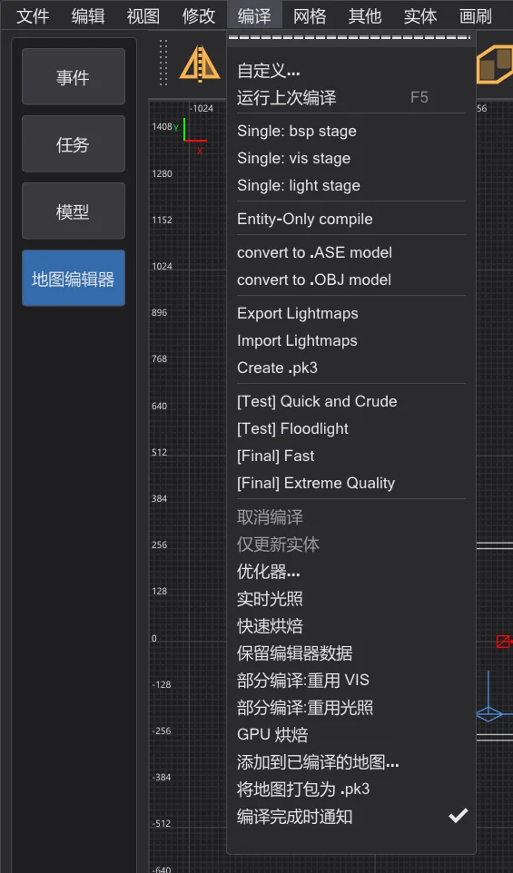
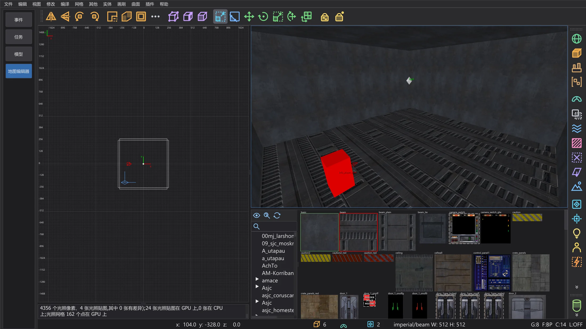

地图编辑器:GPU 烘焙
在显卡上计算地图的全部光照——光照贴图、反弹和光照网格——与 CPU 逐字节相同,在大地图上快得多。
编译 > GPU 烘焙(NetRadiant-Custom 中没有)决定 bhed_q3map2 在哪里计算每个 -light 步骤的光照:自动(更快的一方,逐位相同)(默认)、开(显卡)(开关 -bhedgpubake)或 关(处理器)。编译出的地图逐字节相同——显卡只是更快。选择会被保存(设置 BhedGpuBakeMode)。
自动(更快的一方,逐位相同) 只有在显卡结果逐位相同(支持双精度计算)且预计更快时才使用显卡:大地图和反弹轮次。小地图以及大地图上的 -samples 4 留在处理器上;不支持双精度的显卡从不会被选中。此外,自动模式会按地图和光照开关记住上次在处理器和显卡上运行所用的时间,之后选择更快的一方(快速烘焙也一样)。控制台会显示选择和原因。

编译地图时,编译进度窗口和状态栏会显示显卡名称。编译完成后,控制台显示偏差报告:每第 64 张光照贴图由 CPU 再计算一次,并逐个光照像素比较。最近一次报告也显示在 GPU 烘焙 的工具提示中。该项打开时,实时光照的快速烘焙(地图编辑器:速度与实时光照)也会使用显卡。

在显卡上运行的部分#
- 光照贴图:每个光照像素上每盏灯的贡献及其阴影射线、样式检查、
-samples的自适应超采样(也包括多级)、-filter的滤波,以及按顺序累加各盏灯。 - 反弹(
-bounce):每一轮,包括辐射度生成的面光源。 - 光照网格(模型和玩家的光照):每个网格点与所有灯光。
- 仍在处理器上:加载、灯光列表、顶点光照、生成反弹灯光、接缝、存储和写入 .bsp——以及显卡无法精确完成的一切(见下文)。
为什么结果相同#
显卡通常与处理器的计算方式略有不同——因此其他 GPU 光照烘焙器得到的光照会略有差异。bhed_q3map2 以与处理器上的 q3map2 相同的计算、相同的顺序进行:
- 每次运算都与处理器上完全相同地舍入(不合并乘加);除法用整数运算精确舍入;
- q3map2 以双精度归一化向量和开平方;显卡用额外精确的浮点运算得出相同的舍入结果,在少数临界情况下使用双精度;
- 阴影射线沿 q3map2 自己的追踪树及其容差进行,超采样遵循与处理器相同的采样块顺序;
- 不会按线程碰巧完成的顺序求和——每个光照像素都按列表顺序累加其灯光。
显卡无法精确计算的部分——alpha 阴影和光照滤镜(需要纹理)、超出安全范围的数值、非有限的结果——该光照贴图(或网格点)由处理器计算。如果显卡在编译期间出错或被 Windows 重置,其余部分由处理器计算。放不进显存的光照贴图会按其灯光列表分批计算。
快多少#
在搭载 Intel i9-14900HX(32 线程)和 NVIDIA RTX 4070 Laptop GPU 的笔记本上测量整个 -light 步骤(三次运行的中位数)。处理器使用全部 32 个线程;GPU 烘焙仍需处理器完成上述部分,因此在灯光多、有反弹轮次的大地图上收益最大。
| 地图 | 开关 | 处理器 | 显卡 | 相同的光照像素 |
|---|---|---|---|---|
| mp__duel1 | -fast -patchshadows -samples 2 -filter -bounce 8 | 1.8 s | 1.2 s | 100 % |
| mp__duel1 | -fast -patchshadows -samples 2 -filter | 0.4 s | 0.4 s | 100 % |
| mp__duel1 | -fast -patchshadows -samples 4 -filter -bounce 2 | 1.1 s | 0.8 s | 100 % |
| md_ch_ben | -fast -patchshadows -samples 2 -filter -bounce 8 | 2.5 s | 2.2 s | 100 % |
| md_ch_ben | -fast -patchshadows -samples 2 -filter | 1.7 s | 1.6 s | 100 % |
| md_ch_ben | -fast -patchshadows -samples 4 -filter -bounce 2 | 2.3 s | 2.1 s | 100 % |
| kejim_post | -fast -filter -super 2 | 8.5 s | 6.2 s | 100 % |
| kejim_post | -fast -filter -super 2 -bounce 2 | 48.8 s | 20.0 s | 100 % |
| kejim_post | -fast -filter -super 2 -samples 3 | 9.0 s | 7.3 s | 100 % |
| md_am_sith | -fast -patchshadows -samples 2 -filter -bounce 8 | 62.0 s | 31.3 s | 100 % |
| md_am_sith | -fast -patchshadows -samples 2 -filter | 31.7 s | 12.1 s | 100 % |
| md_am_sith | -fast -patchshadows -samples 4 -filter -bounce 2 | 52.9 s | 28.0 s | 100 % |
| duel_mygeeto | -fast -patchshadows -samples 2 -filter -bounce 8 | 74.3 s | 47.1 s | 100 % |
| duel_mygeeto | -fast -patchshadows -samples 2 -filter | 31.6 s | 16.6 s | 100 % |
| duel_mygeeto | -fast -patchshadows -samples 4 -filter -bounce 2 | 67.2 s | 101.3 s | 100 % |
-samples 4(101 秒对 67 秒)——在大量阴影边缘处的深层超采样对每个光照像素的分支都不同,而显卡不擅长这种情况。使用 -samples 2(Build 菜单)时,测量的每张地图都一样快或更快。命令行用法#
-bhedgpubake——在显卡上计算光照(与-light一起使用)。-bhedgpubakeauto——处理器和显卡中更快的一方,显卡仅在逐位相同时使用;-bhedgpubakezeiten <CPU 毫秒> <GPU 毫秒>传入上次运行的测量时间(0 = 未知)。-bhedgpubakecheck N——每第 N 张光照贴图也由 CPU 计算(默认 64,最多一百万个灯光-光照像素对;1检查全部,0不检查)。报告也写入<地图>.bhedgpu.txt。-bhedgpuadapter N或名称的一部分——使用哪块显卡(否则使用最快的)。
-bhedgpudxr 与 -bhedgpu 一起):它追踪阴影射线约快一倍,但没有 q3map2 的容差会漏掉约 0.15% 的命中,也看不到追踪树中的实体部分——而阴影射线只占 GPU 烘焙时间的 7–8%。因此烘焙时不使用它。